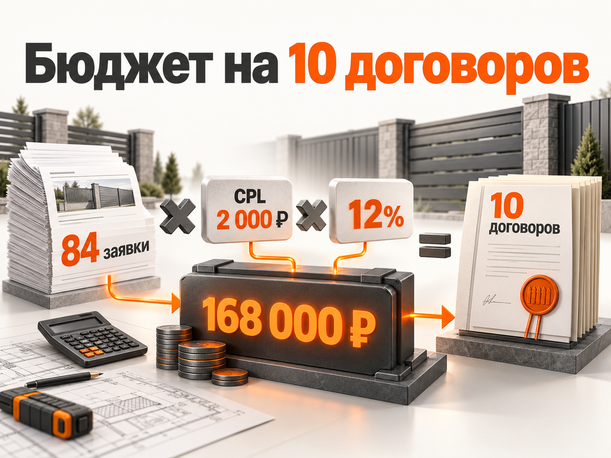
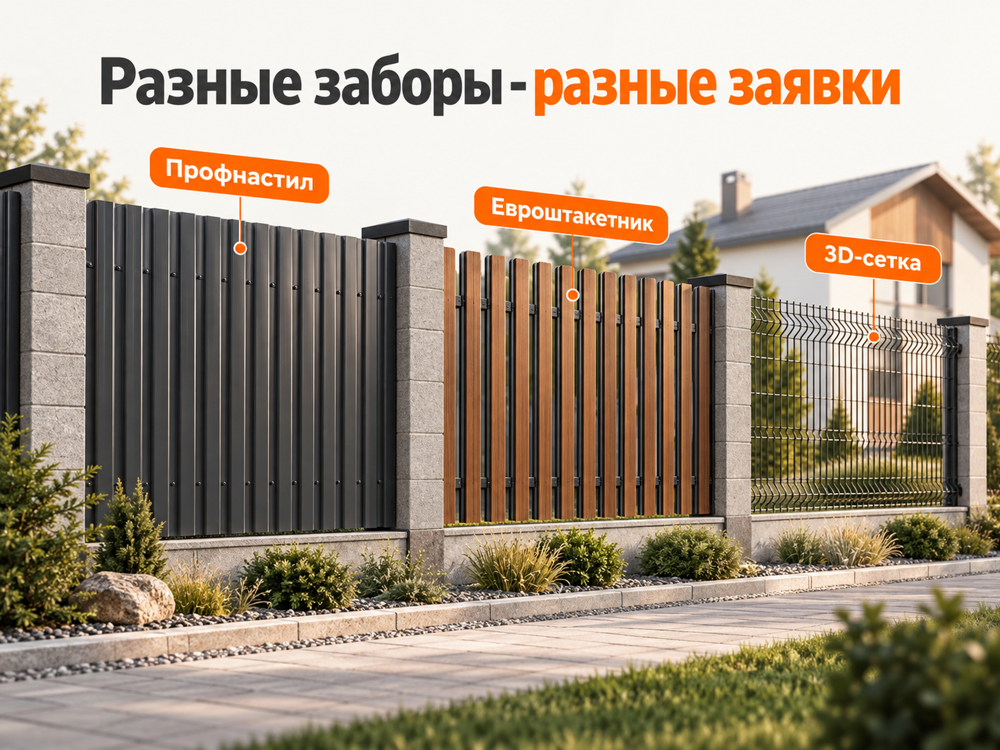
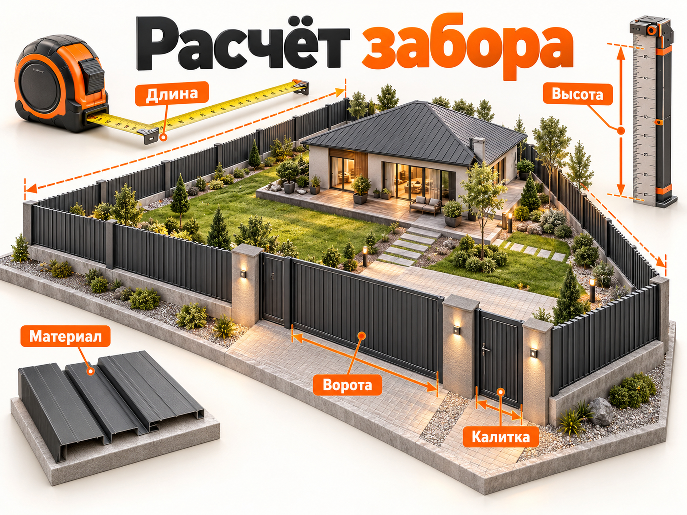
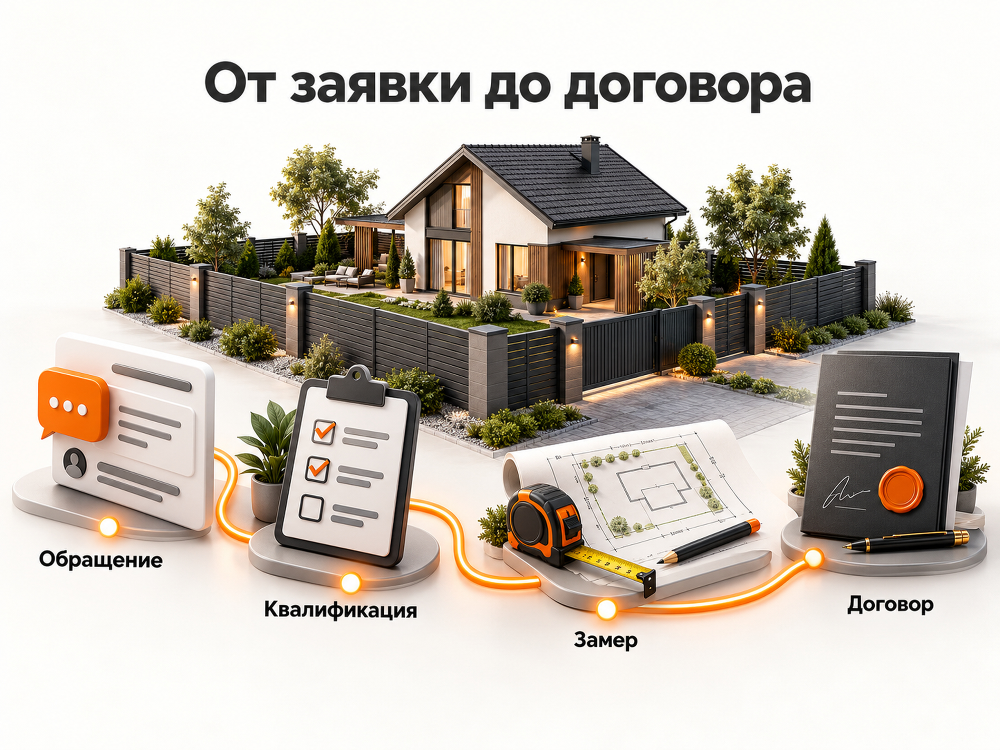
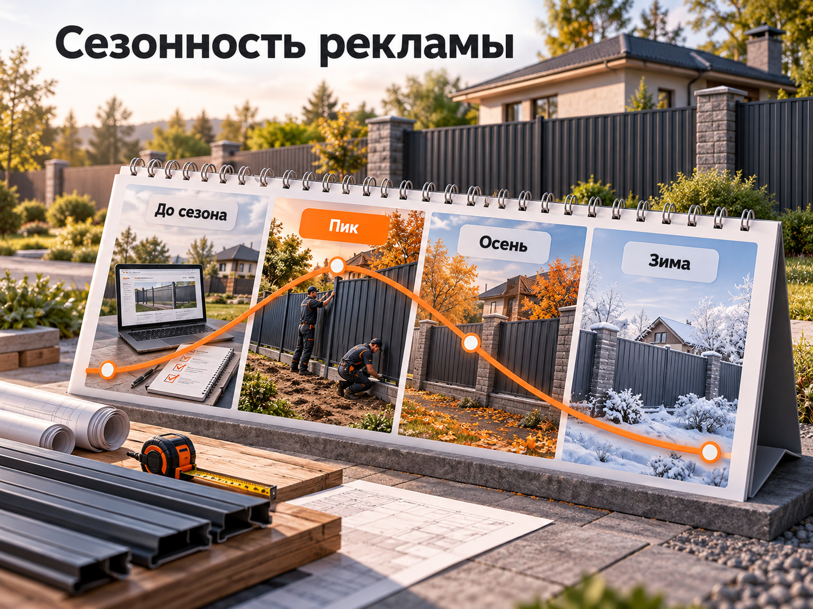

Блог о платном трафике
Как продвигать установку заборов в 2026 году: реклама, заявки и бюджет
Для продвижения установки заборов я бы в первую очередь использовал Яндекс Директ по запросам на монтаж под ключ, параллельно тестировал Авито и развивал присутствие в Яндекс Картах. РСЯ подходит для привлечения дополнительного спроса, а SEO помогает постепенно снижать зависимость от платного трафика.
Для первоначального медиаплана можно заложить стоимость обращения 1500-3000 ₽ и конверсию обращения в договор 8-15%. Это не средние показатели российского рынка, а осторожные расчётные предположения. Реальная стоимость зависит от региона, сезона, типа забора, сайта и обработки заявок.
Главная особенность ниши: прибыль приносит не заявка сама по себе, а заключённый и выполненный договор. Поэтому эффективность рекламы нужно оценивать с учётом квалификации клиента, замера, стоимости монтажа и маржинальности заказа.
Какие каналы продвижения установки заборов выбрать
На старте я бы отдавал приоритет каналам, где человек уже ищет подрядчика. Для небольшого регионального бизнеса это прежде всего Поиск Яндекс Директа и Авито. РСЯ, VK Реклама и SEO решают дополнительные задачи.
| Канал | Для чего использовать | Главный риск |
|---|---|---|
| Яндекс Директ, Поиск | Получать обращения от людей, которые ищут установку забора | Высокая стоимость клика и конкуренция |
| Яндекс Директ, РСЯ | Привлекать дополнительный спрос и возвращать посетителей | Нецелевые обращения |
| Авито | Получать локальные заявки на монтаж | Большое количество сравнений по цене |
| Яндекс Карты | Привлекать локальных клиентов и повышать доверие | Недостаточно отзывов и фотографий |
| SEO | Получать поисковый трафик без оплаты каждого клика | Требуется время на развитие |
| VK Реклама | Показывать готовые объекты потенциальным клиентам | Аудитория может ещё не планировать заказ |
Это распределение ролей, а не рейтинг эффективности. В одном городе лучше может работать Поиск, в другом - Авито или РСЯ.
Если бюджет ограничен, я бы сначала проверил поисковый спрос на монтаж конкретных материалов, качество сайта и конкурентные предложения. Не стоит одновременно запускать все каналы без возможности измерить их вклад в продажи.
Особенно важно отличать продвижение установки заборов от продажи материалов. Запрос «купить профнастил» не равнозначен запросу «установка забора из профнастила под ключ». У таких клиентов разные задачи, а у рекламодателя может быть совершенно разная маржинальность.
Сколько стоит заявка на установку забора: реальные кейсы
Единой средней стоимости заявки на монтаж заборов в России нет. Опубликованные кейсы позволяют оценить возможный порядок расходов, но каждый показатель нужно рассматривать вместе с географией, рекламным каналом и способом учёта конверсий.
Яндекс Директ: Красноярск, август-сентябрь 2026 года
В опубликованном кейсе компании «Забор 124», которая занимается установкой заборов и ворот, приведены следующие результаты за период с 11 августа по 7 сентября 2026 года:
- Расход на рекламу: 72 465,74 ₽.
- Клики: 1729.
- Зафиксированные конверсии: 65.
- Расчётная стоимость конверсии: 1115 ₽.
В опубликованном отчёте эти 65 конверсий приведены без учёта звонков и переписок в мессенджерах. Поэтому показатель нельзя автоматически считать стоимостью всех уникальных обращений или квалифицированных клиентов.
В проекте использовался квиз, позволяющий получить информацию о нужном материале, размерах забора, воротах и сроках установки.
Практический вывод: полезно квалифицировать клиента уже на этапе заявки, но реальные продажи всё равно нужно проверять отдельно.
Яндекс Директ: Краснодар и область
В опубликованном кейсе компании по монтажу заборов под ключ указаны:
- Рекламный бюджет: 135 000 ₽.
- Обращения: 115.
- Продажи: 17.
- Выручка: 1 326 000 ₽.
По этим исходным данным получаются следующие показатели:
| Показатель | Расчёт |
|---|---|
| Стоимость обращения | 1174 ₽ |
| Конверсия обращения в продажу | 14,8% |
| Стоимость продажи по рекламным расходам | 7941 ₽ |
| Средний чек | 78 000 ₽ |
Отдельно в кейсе указаны расходы на услуги специалиста 40 000 ₽. Если включить их в затраты на привлечение, стоимость продажи увеличивается приблизительно до 10 294 ₽.
Точный календарный период кампании в опубликованном описании не указан, поэтому этот пример полезен для сравнения экономики, но не является доказательством средней цены заявки в октябре 2026 года.
VK Реклама: Магнитогорск, сезон 2025 года
В кейсе производителя заборов и ограждений из Магнитогорска приведены результаты за апрель-ноябрь 2025 года:
- Рекламный бюджет: 800 000 ₽.
- Получено заявок: 983.
- Стоимость заявки: около 814 ₽.
- Заявленная выручка: 9,35 млн ₽.
Кейс опубликован в 2026 году, но рекламная кампания относится к сезону 2025 года.
Компания использовала географические аудитории, реальные фотографии объектов и лид-формы. Этот пример показывает возможности VK Рекламы для визуальной строительной ниши, но его CPL нельзя напрямую сравнивать со стоимостью квалифицированного обращения из Яндекс Директа.
Мой вывод: чужие кейсы дают ориентиры, а не гарантии. Даже в пределах одного рекламного канала стоимость заявки может отличаться в несколько раз. Более дорогой лид иногда приносит более крупный и прибыльный договор.
Как рассчитать рекламный бюджет на установку заборов
Бюджет продвижения нужно рассчитывать от необходимого количества договоров, а не от произвольной месячной суммы.
Предположим, компания способна выполнить 10 дополнительных заказов в месяц.
Сначала определяем, сколько заявок понадобится:
Количество заявок = план договоров / конверсия заявки в договор.
Затем рассчитываем расходы:
Рекламный бюджет = количество заявок × CPL.
Для первоначального прогноза рассмотрим три сценария. Их параметры являются допущениями, а не статистической нормой рынка.
| Показатель | Сильный | Рабочий | Осторожный |
|---|---|---|---|
| CPL | 1500 ₽ | 2000 ₽ | 3000 ₽ |
| Конверсия заявки в договор | 15% | 12% | 8% |
| Необходимо заявок | 67 | 84 | 125 |
| План договоров | 10 | 10 | 10 |
| Рекламный бюджет | 100 500 ₽ | 168 000 ₽ | 375 000 ₽ |
| Стоимость договора | 10 000 ₽ | 16 667 ₽ | 37 500 ₽ |
Количество заявок округлено вверх до целого, поэтому прогнозируемое количество договоров немного превышает 10 в первых двух сценариях.
В рабочем сценарии 84 обращения по 2000 ₽ потребуют 168 000 ₽ рекламного бюджета. При конверсии 12% это примерно 10 договоров.
Получается, для одной и той же цели расход может отличаться более чем в три раза.
Но это только рекламные расходы. Услуги специалиста, разработку сайта, аналитику, налоги и другие затраты нужно учитывать отдельно. Эти сценарии также не гарантируют, что в выбранном регионе окажется достаточно спроса для получения нужного количества заявок.

Подробная методика расчёта есть в статье «Прогноз бюджета Яндекс Директ».
Какую стоимость договора бизнес может себе позволить
Максимально допустимая стоимость привлечения клиента зависит от экономики конкретного заказа.
Среднего чека недостаточно. Из выручки нужно вычесть материалы, доставку, оплату монтажных работ, переменные налоги и остальные расходы, непосредственно связанные с выполнением заказа.
Предположим, после переменных расходов с установки одного забора остаётся 40 000 ₽.
Компания готова направить на привлечение клиента не больше 30% этой суммы.
Получаем:
40 000 ₽ × 30% = 12 000 ₽.
Значит, допустимая стоимость привлечения одного договора составляет 12 000 ₽.
Теперь рассчитаем предельную стоимость заявки при конверсии в договор 12%:
12 000 ₽ × 12% = 1440 ₽.
При этих условиях компания может платить за заявку не более 1440 ₽, если весь допустимый бюджет привлечения приходится только на рекламу.
Если фактический CPL составляет 2000 ₽, а конверсия остаётся 12%, стоимость договора достигнет примерно 16 667 ₽. Это выше допустимых 12 000 ₽.
Рабочий прогноз из предыдущего раздела может оказаться экономически неприемлемым для конкретного бизнеса, хотя рекламные показатели сами по себе выглядят нормальными.
Если дополнительно оплачиваются услуги по настройке и ведению рекламы, доступный рекламный CPL должен быть ещё ниже.
Практический вывод: сначала определите допустимую стоимость договора, затем рассчитайте предельный CPL. Не наоборот.
Кому продавать установку заборов и как разделять спрос
Рекламировать все виды заборов одним предложением невыгодно, если материалы отличаются стоимостью, маржинальностью и назначением.
Я бы разделил основные направления следующим образом:
| Направление | Что важно клиенту |
|---|---|
| Заборы из профнастила | Стоимость под ключ, сплошное ограждение, сроки |
| Евроштакетник | Внешний вид, варианты заполнения, долговечность покрытия |
| 3D-сетка | Ограждение территории, цена, назначение объекта |
| Сетка-рабица | Экономичный монтаж, участок, длина |
| Заборы-жалюзи | Дизайн, приватность, внешний вид дома |
| Ворота и калитки | Удобство доступа, соответствие забору, автоматика |
Отдельно можно выделять владельцев дач, частных домов, коттеджей, коммерческих и производственных участков.
Не обязательно создавать отдельную рекламную кампанию для каждого сегмента. Но различия между материалами должны присутствовать в семантике, объявлениях, посадочных страницах и аналитике.
Например, человек, который ищет монтаж дешёвой сетки на дачном участке, вряд ли заинтересуется рекламой дорогих заборов-жалюзи.
При этом клиенту, который строит коттедж, может быть интересно сразу заказать ограждение, ворота, калитку и автоматику. Такие комплексные заказы потенциально имеют другую экономику, поэтому их важно учитывать отдельно.

Как составить предложение для рекламы установки заборов
Хороший оффер на установку забора должен отвечать на три вопроса: что входит в услугу, как рассчитывается стоимость и почему заказчику стоит обратиться именно в эту компанию.
Слабое предложение:
«Заборы недорого».
Более конкретные варианты:
- «Забор из профнастила под ключ с установкой».
- «Рассчитаем стоимость забора по размерам участка».
- «Монтаж забора с воротами и калиткой».
- «Подготовим смету на установку ограждения».
Можно использовать предложения о бесплатном замере, гарантии, монтаже за определённое количество дней или фиксированной смете, но только если компания действительно предоставляет такие условия.
Для этой ниши особенно полезны реальные фотографии объектов с указанием материала, длины ограждения и выполненных работ.
Лучше показать несколько завершённых заказов, чем ограничиваться абстрактными изображениями красивых домов с заборами.
Что должно быть на сайте компании по установке заборов
Посадочная страница должна помогать человеку рассчитать стоимость нужного забора и убедиться, что подрядчик сможет выполнить работу на его участке.
Для основных материалов желательно иметь отдельные страницы. Запрос «евроштакетник с установкой» должен вести к предложению по евроштакетнику, а не к общему каталогу строительных материалов.
На посадочной я бы разместил:
- Чёткое предложение по конкретному типу забора.
- Фотографии реально выполненных объектов.
- Примеры стоимости с указанием комплектации.
- Описание материалов и вариантов исполнения.
- Условия доставки и монтажа.
- Информацию о гарантии.
- Зону выезда монтажных бригад.
- Форму расчёта стоимости или короткий квиз.
Какие параметры должен учитывать калькулятор забора
Для предварительного расчёта полезно запросить:
- Длину ограждения.
- Высоту забора.
- Материал.
- Необходимость установки ворот и калитки.
- Населённый пункт.
- Особенности участка, если они влияют на монтаж.
Например, два забора одинаковой длины могут отличаться по стоимости из-за высоты, материала, фундамента, перепада рельефа и конструкции ворот.
Поэтому цену за погонный метр нужно указывать вместе с комплектацией. Не следует создавать впечатление, будто рекламируемая цена автоматически включает все работы и материалы.
Калькулятор не обязан выдавать абсолютно точную сумму. Он может рассчитывать предварительный диапазон и передавать менеджеру параметры для уточнения сметы.
Обещать точную цену без исходных параметров нельзя.

Как настроить Яндекс Директ для установки заборов
Яндекс Директ подходит для продвижения установки заборов, потому что позволяет работать со сформированным поисковым спросом и дополнительно привлекать аудиторию через рекламную сеть.
В 2026 году основным инструментом для такой задачи я бы рассматривал Единую перфоманс-кампанию. Она позволяет настраивать размещения в Поиске, РСЯ и Картах, а также управлять географией, аудиториями и объявлениями.
Поиск: какие запросы использовать
Начинать лучше с коммерческих формулировок, в которых человек явно ищет монтаж или подрядчика.
Примеры:
- установка забора под ключ;
- монтаж забора из профнастила;
- забор из евроштакетника с установкой;
- заказать установку забора;
- установка 3D-забора;
- забор с воротами под ключ;
- стоимость забора с монтажом;
- монтаж забора в конкретном городе.
Отдельно стоит исследовать запросы, связанные с коттеджными посёлками, СНТ, пригородами и населёнными пунктами внутри рабочей географии.
Семантику нужно группировать по намерению клиента, материалам и коммерческой ценности, а не только по похожести слов.
Какие запросы исключать
Широкие фразы со словом «забор» могут приводить аудиторию, не заинтересованную в монтаже.
Проверять на исключение нужно запросы про:
- самостоятельную установку;
- чертежи и инструкции;
- вакансии монтажников;
- покупку материалов без работ;
- аренду оборудования;
- рекламу и баннеры на заборах;
- изображения и проекты без намерения заказать услугу.
Минус-слова следует применять с учётом смысла конкретной группы. Например, слово «фото» не всегда означает нецелевой спрос: человек может изучать варианты дизайна перед заказом.
Особое внимание нужно уделять отчёту по фактическим поисковым запросам и автотаргетингу.
РСЯ: какие объявления использовать
РСЯ я бы тестировал отдельно от Поиска, с собственным контролем бюджета и качества обращений.
В сетях важно быстро показать человеку саму услугу. Хорошо подходят реальные фотографии:
- завершённого забора на участке;
- ограждения вместе с воротами;
- крупного плана материала;
- монтажа на реальном объекте;
- сравнения состояния участка до и после работы.
В рекламном изображении должно быть понятно, что компания продаёт именно изготовление или установку забора, а не листы профнастила.
Не следует автоматически считать РСЯ второстепенным каналом. В отдельных опубликованных проектах по заборам рекламная сеть давала основной объём заявок.
Но оптимизировать её стоит по качеству лидов. Большое количество дешёвых отправок формы не имеет смысла, если они не превращаются в замеры и договоры.
Подробное сравнение механизмов размещения есть в статье «Поиск или РСЯ в Яндекс Директ».
География рекламы
Для монтажной компании география влияет не только на спрос, но и на себестоимость выполнения заказа.
Я бы разделял:
- основной город;
- ближайшие населённые пункты;
- коттеджные посёлки и СНТ;
- удалённые районы с дополнительными транспортными расходами.
Нередко удалённый объект оказывается выгодным при большом объёме работ. Поэтому отключать район только по высокой стоимости заявки неправильно.
Сравнивать географию нужно по стоимости договора и ожидаемой марже.
Какую стратегию выбрать
Я бы не дробил небольшой региональный проект на большое количество кампаний и целей.
На старте важно обеспечить достаточный объём данных для выбранной стратегии. Мой практический ориентир для стабильной оптимизации - стремиться примерно к 15-20 содержательным конверсиям в неделю на кампанию, если это позволяет спрос.
Это ориентир для планирования, а не универсальное техническое требование Яндекса.
Если реальных договоров мало, можно сначала использовать более частое, но достаточно качественное действие, например подтверждённую заявку. По мере накопления статистики полезно передавать в рекламную систему квалифицированные лиды и продажи.
Оплата за конверсии не является обязательным выбором. Стратегию следует подбирать по объёму данных, бюджету и бизнес-целям.
Когда использовать ретаргетинг
Ретаргетинг имеет смысл, когда компания накопила аудиторию посетителей, которые изучали материалы, смотрели объекты или начинали расчёт, но не оставили заявку.
Таким людям можно показать другую аргументацию: выполненные заборы, условия замера, варианты материалов или информацию о ближайших сроках монтажа.
Если посещений мало, отдельная кампания ретаргетинга может не получить достаточного охвата. Запускать её только ради наличия дополнительного канала не нужно.
Как измерять качество лидов и реальные продажи
Для установки заборов я бы обязательно строил аналитику до договора, а не ограничивался отправками форм.
В системе учёта нужно последовательно фиксировать:
- Первое обращение.
- Подтверждение потребности и географии.
- Назначение или выполнение замера.
- Подготовку коммерческого предложения.
- Заключение договора.
- Получение оплаты.
Квалифицированным лидом можно считать человека, которому действительно нужна установка забора в рабочем регионе компании, а предполагаемый заказ соответствует минимальным коммерческим условиям.
Например, обращение на установку 80 метров евроштакетника с воротами и запрос на ремонт одной секции ограждения не должны иметь одинаковую ценность для рекламного алгоритма.
В Метрике нужно фиксировать отправку форм, заявки из квиза и реальные звонки через коллтрекинг.
Клик по кнопке телефона не равен состоявшемуся звонку. Нажатие на кнопку мессенджера тоже не доказывает, что клиент написал сообщение.
Следующий этап - передача данных о квалифицированных обращениях, договорах и оплатах из CRM в Яндекс Метрику. Это позволяет анализировать источники с учётом результата продаж и использовать подходящие офлайн-конверсии для оптимизации.
Рассмотрим условный пример двух рекламных кампаний.
Кампания А получила 25 заявок по 1200 ₽. Из них заключён один договор. Расход составил 30 000 ₽, стоимость договора - 30 000 ₽.
Кампания Б получила 5 заявок по 2500 ₽. Из них заключён один договор. Расход составил 12 500 ₽, стоимость договора - 12 500 ₽.
У второй кампании CPL более чем вдвое выше, но стоимость заключённого договора существенно ниже.
Это учебный пример, а не результаты реального рекламного проекта.
Именно поэтому я бы сравнивал рекламные каналы по квалифицированным лидам, замерам, заключённым договорам и марже.

Подробнее о передаче результатов продаж написано в статье «Офлайн-конверсии в Яндекс Директе».
Когда запускать рекламу установки заборов: сезонность
Продвижение установки заборов лучше готовить до начала активного строительного сезона. Точные сроки зависят от региона, погоды и условий монтажа.
Для многих регионов России основная активность приходится на весну, лето и начало осени. В опубликованном кейсе Магнитогорска работа велась с апреля по ноябрь 2025 года, а наиболее активным периодом был июнь-август.
Я бы разделил продвижение на четыре этапа.
| Период | Основная задача |
|---|---|
| До сезона | Подготовить сайт, семантику, объявления и аналитику |
| Начало сезона | Проверить спрос и качество первых обращений |
| Пиковые месяцы | Масштабировать прибыльные направления |
| Осень и межсезонье | Работать с отложенным спросом и готовить следующий сезон |
В конкретном регионе календарь может сдвигаться. Например, сроки монтажа зависят от промерзания грунта, выбранной технологии установки и погодных условий.
Я бы не рекомендовал механически отключать всю рекламу зимой. Сначала нужно проверить реальный спрос, возможности монтажа и стоимость обращений.
Если заказов на ближайшее время мало, можно перераспределить расходы на подготовку сайта, накопление отзывов, SEO и тестирование предложений для следующего сезона.

Как получать заявки через Авито, SEO и Яндекс Карты
Авито для установки заборов
Авито стоит тестировать как отдельный источник локального спроса.
Для объявления важно показывать реальные объекты, конкретный материал, перечень услуг и территорию работы.
Лучше разделять предложения по типам заборов, если площадка и правила размещения позволяют это сделать без дублирования одинаковых объявлений.
Полезно проверять не только количество контактов, но и то, сколько из них превращается в замеры и договоры.
SEO-продвижение сайта
Органическое продвижение стоит строить вокруг конкретных услуг:
- установка заборов под ключ;
- заборы из профнастила с монтажом;
- евроштакетник с установкой;
- монтаж 3D-ограждений;
- установка ворот и калиток.
Отдельную ценность дают страницы выполненных объектов.
Например, материал об установке 42 метров евроштакетника на конкретном участке может содержать фотографии, условия монтажа, использованные материалы, сроки и итоговую стоимость, если компания разрешает её публиковать.
Такая страница отвечает на конкретные вопросы клиента и помогает показать реальную компетенцию подрядчика.
Не нужно создавать множество однотипных страниц для городов, в которых компания фактически не работает.
Яндекс Карты
Если у компании есть подтверждаемая постоянная точка присутствия, полезно развивать карточку организации.
Для потенциального клиента особенно важны отзывы, реальные фотографии заборов, контактные данные, сведения об услугах и условиях работы.
Карты могут дополнять рекламу и органическую выдачу, но не заменяют отдельную посадочную страницу с описанием монтажа.
Основные ошибки в рекламе установки заборов
Наиболее дорогие ошибки в этой нише связаны не только с настройками рекламного кабинета, но и с отсутствием связи между рекламой и продажами.
Ошибка 1. Считать каждое целевое действие полноценным лидом.
Отправка формы, клик по телефону и состоявшийся разговор - разные события. Их нельзя смешивать в одном показателе без понимания методики.
Ошибка 2. Продвигать все материалы через одно предложение.
Клиенты ищут разные виды ограждений. Общая реклама часто хуже соответствует конкретной потребности.
Ошибка 3. Не учитывать географию монтажа.
Удалённые заказы могут требовать дополнительных транспортных расходов и времени бригады.
Ошибка 4. Оптимизировать рекламу только по минимальному CPL.
Дешёвые обращения не гарантируют выгодных договоров.
Ошибка 5. Масштабировать рекламу без учёта загрузки бригад.
Если менеджеры не успевают обрабатывать заявки, а замеры откладываются на недели, дополнительный трафик может увеличить потери.
Ошибка 6. Обещать цену, которую невозможно подтвердить.
Рекламируемая стоимость забора должна соответствовать понятной комплектации и условиям монтажа.
Ошибка 7. Запускать рекламу без учёта договоров.
Без CRM или хотя бы системного учёта обращений невозможно надёжно определить, какие кампании приносят продажи.
Пошаговый план продвижения компании по установке заборов
Я бы организовал запуск следующим образом:
- Определить план договоров с учётом мощности монтажных бригад.
- Рассчитать маржу и допустимую стоимость привлечения заказа.
- Выбрать наиболее выгодные материалы и услуги.
- Изучить спрос по региону и коммерческим запросам.
- Подготовить посадочные страницы и реальные фотографии объектов.
- Настроить Яндекс Метрику, учёт звонков и CRM.
- Запустить Яндекс Директ на горячий поисковый спрос.
- Проверить качество обращений и фактические поисковые запросы.
- Протестировать РСЯ и Авито с раздельным учётом затрат.
- Передавать данные о квалифицированных лидах и договорах.
- Увеличивать бюджет в сегментах с приемлемой стоимостью продажи.
- Параллельно развивать SEO и локальное присутствие.
Первые решения об эффективности следует принимать после получения достаточного количества данных, а не по нескольким случайным заявкам.
Итог: сколько закладывать на продвижение установки заборов
Для предварительного расчёта рекламной кампании в 2026 году я бы рассматривал стоимость обращения 1500-3000 ₽ и конверсию заявки в договор 8-15%, пока нет данных конкретной компании.
При плане 10 договоров это даёт расчётный рекламный бюджет около 100 500-375 000 ₽ в зависимости от сценария.
Но универсально подходящего бюджета не существует. Если допустимая стоимость договора ниже расчётной, нужно менять рекламную экономику: улучшать предложение и конверсию, сокращать CPL, пересматривать продуктовую структуру или выбирать более маржинальные заказы.
Для компании по установке заборов главным результатом рекламы должен быть не минимальный CPL, а количество прибыльных договоров при контролируемой стоимости привлечения.
Если нужен индивидуальный медиаплан и настройка Яндекс Директа с учётом региона, материалов, стоимости монтажа и загрузки бригад, свяжитесь со мной. Я занимаюсь платным трафиком и помогаю выстраивать аналитику от рекламного обращения до продажи.